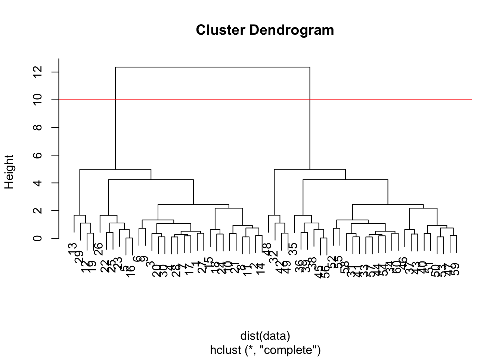

# Make up some data
hist(rnorm(10000, mean = 3))Lab 7: Unsupervised Learning
Today we will start our multi-part exploration of some key machine learning methods. We will begin with clutching - finding groupings in data, and then dimensionally reduction.
Clustering
Lets start from “k-means” cluster The main function in base R for this is kmeans() .
# rnorm(30, -3)
# rnorm(30, +3)
# combine two vectors
tmp <- c(rnorm(30, -3), rnorm(30, +3))
# rev means print reverse
data <- cbind(x = tmp, y = rev(tmp))
library(ggplot2)
ggplot(data, aes(x = x, y = y))+
geom_point()kmeans clustering
Now let’s try kmeans()
km <- kmeans(data, centers = 2)
kmK-means clustering with 2 clusters of sizes 30, 30
Cluster means:
x y
1 3.014497 -3.124895
2 -3.124895 3.014497
Clustering vector:
[1] 2 2 2 2 2 2 2 2 2 2 2 2 2 2 2 2 2 2 2 2 2 2 2 2 2 2 2 2 2 2 1 1 1 1 1 1 1 1
[39] 1 1 1 1 1 1 1 1 1 1 1 1 1 1 1 1 1 1 1 1 1 1
Within cluster sum of squares by cluster:
[1] 59.76846 59.76846
(between_SS / total_SS = 90.4 %)
Available components:
[1] "cluster" "centers" "totss" "withinss" "tot.withinss"
[6] "betweenss" "size" "iter" "ifault" Q. How many points in each cluster?
km$size[1] 30 30Q. What component of your result object details cluster assignment/membership?
km$cluster [1] 2 2 2 2 2 2 2 2 2 2 2 2 2 2 2 2 2 2 2 2 2 2 2 2 2 2 2 2 2 2 1 1 1 1 1 1 1 1
[39] 1 1 1 1 1 1 1 1 1 1 1 1 1 1 1 1 1 1 1 1 1 1Q. What are centers/mean value of each center?
km$centers x y
1 3.014497 -3.124895
2 -3.124895 3.014497Q. Make a plot of your data showing your cluster results (grouping/ cluster and cluster center)
ggplot(data, aes(x = x, y = y))+
geom_point(col = km$cluster) +
geom_point(data = km$centers, color = 'green', size = 9, shape = 17) 
Q. Run
kmeans()again and cluster in 4 groups and plot the results.
km4 <- kmeans(data, centers = 4)
ggplot(data, aes(x = x, y = y))+
geom_point(col = km4$cluster) +
geom_point(data = km4$centers, color = 'red', size = 7, shape = 18) +
labs(title = 'Plots with 4 clusters')Hierarchical Clustering
This form of clustering aims to reveal the structure in your data by progressively grouping points into a ever smaller number of clusters.
The main function in base R for this is hclust(). This function does not take our input data directly but wants “distance matrix” that details how (dis)similar all our input points are to each other.
hc <- hclust(dist(data))
hc
Call:
hclust(d = dist(data))
Cluster method : complete
Distance : euclidean
Number of objects: 60 The print out above is not very useful, but there is a useful plot() method.
plot(hc)
abline(h = 10, col = 'red')
To get my main result (my cluster membership vector) I need to “cut” my tree use cutree()
cut <- cutree(hc, h = 10)
cut [1] 1 1 1 1 1 1 1 1 1 1 1 1 1 1 1 1 1 1 1 1 1 1 1 1 1 1 1 1 1 1 2 2 2 2 2 2 2 2
[39] 2 2 2 2 2 2 2 2 2 2 2 2 2 2 2 2 2 2 2 2 2 2ggplot(data, aes(x, y)) +
geom_point(col = cut)Use ggplot to plot dendrogram
library(ggdendro)
hhc <- dendro_data(hc, type = "rectangle")
ggdendrogram(hc, rotate = FALSE) +
labs(title = 'HCluster Dendrogram') 1. PCA of UK food data
Import and Read data
url <- "https://tinyurl.com/UK-foods"
x <- read.csv(url)Q1. How many rows and columns are in your new data frame named x? What R functions could you use to answer this questions?
# Complete the following code to find out how many rows and columns are in x?
dim(x)[1] 17 5Preview the first 6 rows
head(x) X England Wales Scotland N.Ireland
1 Cheese 105 103 103 66
2 Carcass_meat 245 227 242 267
3 Other_meat 685 803 750 586
4 Fish 147 160 122 93
5 Fats_and_oils 193 235 184 209
6 Sugars 156 175 147 139Remove the name column
rownames(x) <- x[,1]
x <- x[,-1]
head(x) England Wales Scotland N.Ireland
Cheese 105 103 103 66
Carcass_meat 245 227 242 267
Other_meat 685 803 750 586
Fish 147 160 122 93
Fats_and_oils 193 235 184 209
Sugars 156 175 147 139Or you can do
x <- read.csv(url, row.names=1)
head(x) England Wales Scotland N.Ireland
Cheese 105 103 103 66
Carcass_meat 245 227 242 267
Other_meat 685 803 750 586
Fish 147 160 122 93
Fats_and_oils 193 235 184 209
Sugars 156 175 147 139dim(x)[1] 17 4Q2. Which approach to solving the ‘row-names problem’ mentioned above do you prefer and why? Is one approach more robust than another under certain circumstances?
x <- x[,-1]
head(x) Wales Scotland N.Ireland
Cheese 103 103 66
Carcass_meat 227 242 267
Other_meat 803 750 586
Fish 160 122 93
Fats_and_oils 235 184 209
Sugars 175 147 139This method is less robust because it would “cut” the data if you do it several times
x <- read.csv(url, row.names=1)
head(x) England Wales Scotland N.Ireland
Cheese 105 103 103 66
Carcass_meat 245 227 242 267
Other_meat 685 803 750 586
Fish 147 160 122 93
Fats_and_oils 193 235 184 209
Sugars 156 175 147 139Spotting major differences and trends
barplot(as.matrix(x), beside=T, col=rainbow(nrow(x)))
Q3: Changing what optional argument in the above barplot() function results in the following plot?
barplot(as.matrix(x), beside=F, col=rainbow(nrow(x)))
Q5: Generating all pairwise plots may help somewhat. Can you make sense of the following code and resulting figure? What does it mean if a given point lies on the diagonal for a given plot?
pairs(x, col=rainbow(10), pch=16)
So the paris plot is useful for small datasets but it can be lots of work to interpret.
Each plot is comparing two regions in terms of food raw data. Each data point is each food consumed in grams (per person, per week for the two region in x and y axis.
Q6. What is the main differences between N. Ireland and the other countries of the UK in terms of this data-set?
PCA to the rescue
Using prcomp()
# Use the prcomp() PCA function
pca <- prcomp(t(x))
summary(pca)Importance of components:
PC1 PC2 PC3 PC4
Standard deviation 324.1502 212.7478 73.87622 2.921e-14
Proportion of Variance 0.6744 0.2905 0.03503 0.000e+00
Cumulative Proportion 0.6744 0.9650 1.00000 1.000e+00attributes(pca)$names
[1] "sdev" "rotation" "center" "scale" "x"
$class
[1] "prcomp"pca$x PC1 PC2 PC3 PC4
England -144.99315 -2.532999 105.768945 -9.152022e-15
Wales -240.52915 -224.646925 -56.475555 5.560040e-13
Scotland -91.86934 286.081786 -44.415495 -6.638419e-13
N.Ireland 477.39164 -58.901862 -4.877895 1.329771e-13Q7. Complete the code below to generate a plot of PC1 vs PC2. The second line adds text labels over the data points.
# Plot PC1 vs PC2
plot(pca$x[,1], pca$x[,2], xlab="PC1", ylab="PC2", xlim=c(-270,500))
text(pca$x[,1], pca$x[,2], colnames(x))
Q8. Customize your plot so that the colors of the country names match the colors in our UK and Ireland map and table at start of this document.
plot(pca$x[,1], pca$x[,2], xlab="PC1", ylab="PC2", xlim=c(-270,500), pch = 10)
text(pca$x[,1], pca$x[,2], colnames(x), col = c('orange', 'red', 'blue', 'darkgreen'))
abline(h = 0, col = "grey")
abline(v = 0, col = "grey")Another important output from PCA is called the “loading” vector or the “rotation” component - this tells us how much the original variables (the foods in this case) contribute to the new PCs
pca$rotation PC1 PC2 PC3 PC4
Cheese -0.056955380 0.016012850 0.02394295 -0.409382587
Carcass_meat 0.047927628 0.013915823 0.06367111 0.729481922
Other_meat -0.258916658 -0.015331138 -0.55384854 0.331001134
Fish -0.084414983 -0.050754947 0.03906481 0.022375878
Fats_and_oils -0.005193623 -0.095388656 -0.12522257 0.034512161
Sugars -0.037620983 -0.043021699 -0.03605745 0.024943337
Fresh_potatoes 0.401402060 -0.715017078 -0.20668248 0.021396007
Fresh_Veg -0.151849942 -0.144900268 0.21382237 0.001606882
Other_Veg -0.243593729 -0.225450923 -0.05332841 0.031153231
Processed_potatoes -0.026886233 0.042850761 -0.07364902 -0.017379680
Processed_Veg -0.036488269 -0.045451802 0.05289191 0.021250980
Fresh_fruit -0.632640898 -0.177740743 0.40012865 0.227657348
Cereals -0.047702858 -0.212599678 -0.35884921 0.100043319
Beverages -0.026187756 -0.030560542 -0.04135860 -0.018382072
Soft_drinks 0.232244140 0.555124311 -0.16942648 0.222319484
Alcoholic_drinks -0.463968168 0.113536523 -0.49858320 -0.273126013
Confectionery -0.029650201 0.005949921 -0.05232164 0.001890737PCA is a super useful method for gaining insight into high dimensional data
PCA of RNA-seq data
url2 <- "https://tinyurl.com/expression-CSV"
rna.data <- read.csv(url2, row.names=1)
head(rna.data) wt1 wt2 wt3 wt4 wt5 ko1 ko2 ko3 ko4 ko5
gene1 439 458 408 429 420 90 88 86 90 93
gene2 219 200 204 210 187 427 423 434 433 426
gene3 1006 989 1030 1017 973 252 237 238 226 210
gene4 783 792 829 856 760 849 856 835 885 894
gene5 181 249 204 244 225 277 305 272 270 279
gene6 460 502 491 491 493 612 594 577 618 638## Again we have to take the transpose of our data
pca <- prcomp(t(rna.data), scale=TRUE)summary(pca)Importance of components:
PC1 PC2 PC3 PC4 PC5 PC6 PC7
Standard deviation 9.6237 1.5198 1.05787 1.05203 0.88062 0.82545 0.80111
Proportion of Variance 0.9262 0.0231 0.01119 0.01107 0.00775 0.00681 0.00642
Cumulative Proportion 0.9262 0.9493 0.96045 0.97152 0.97928 0.98609 0.99251
PC8 PC9 PC10
Standard deviation 0.62065 0.60342 3.345e-15
Proportion of Variance 0.00385 0.00364 0.000e+00
Cumulative Proportion 0.99636 1.00000 1.000e+00Q. How many gene in this dataset?
nrow(rna.data)[1] 100head(pca$x) PC1 PC2 PC3 PC4 PC5 PC6
wt1 -9.697374 1.5233313 -0.2753567 0.7322391 -0.6749398 1.1823860
wt2 -9.138950 0.3748504 1.0867958 -1.9461655 0.7571209 -0.4369228
wt3 -9.054263 -0.9855163 0.4152966 1.4166028 0.5835918 0.6937236
wt4 -8.731483 -0.7468371 0.5875748 0.2268129 -1.5404775 -1.2723618
wt5 -9.006312 -0.2945307 -1.8498101 -0.4303812 0.8666124 -0.2496025
ko1 8.846999 2.2345475 -0.1462750 -1.1544333 -0.6947862 0.7128021
PC7 PC8 PC9 PC10
wt1 -0.24446614 1.03519396 0.07010231 3.388516e-15
wt2 -0.03275370 0.26622249 0.72780448 2.996563e-15
wt3 -0.03578383 -1.05851494 0.52979799 3.329630e-15
wt4 -0.52795595 -0.20995085 -0.50325679 3.317526e-15
wt5 0.83227047 -0.05891489 -0.81258430 2.712504e-15
ko1 -0.07864392 -0.94652648 -0.24613776 2.768138e-15I will make a mian result figure using ggplot:
library(ggplot2)res <- as.data.frame(pca$x)
mycols <- c(rep('blue', 5), rep('red', 5))
ggplot(res, aes(x = PC1, y = PC2, label = row.names(res))) +
geom_label(col = mycols)